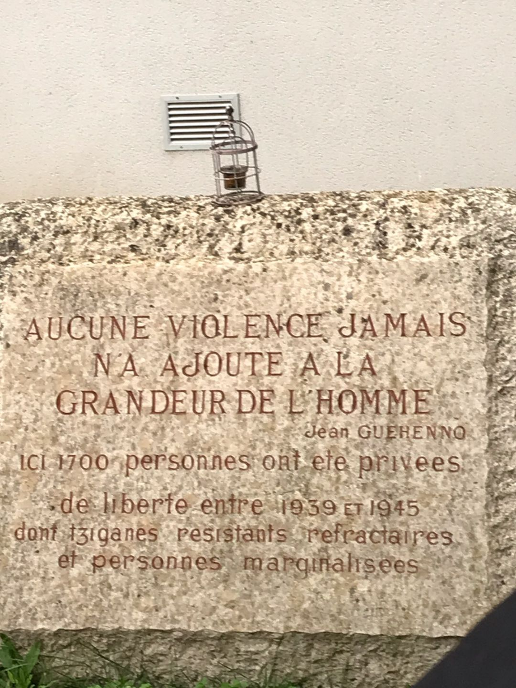

Voyage d'études sur la trace des juifs et nomades de France durant la Seconde Guerre Mondiale
Jour 1
A notre arrivée dans la ville d'Orléans,nous avons visité le musée-mémorial du CERCIL ouvert en 1991
C'est un centre d'étude et de recherche sur les camps d'internement du Loire, il a pour objectif de rassembler de la documentation,
d'étudier les archives,de collecter les témoignages et partager la connaissance.
Le guide a retracé l'histoire des camps d'internement dans le Loiret durant la Seconde Guerre mondiale.
Photo du musée du Cercil :

Les guides nous ont d'abord raconté l'histoire d'une petite fille nommée
Aline Korenbajzer 3 ans, devenue l'emblème du CERCIL, qui figure sur l'affiche
de la première exposition. Puis, ils nous ont aussi parlé des baraques et ont
évoqué les camps d'internement du Loiret, notamment celui de Jargeau.
Nous avons ensuite visité le musée, avec l'ensemble des élèves et nos professeurs nous avons découvert le fragment d'une baraque datant de la Seconde Guerre Mondiale.
Photo de la baraque rachetée à un garagiste et venant du camp de Beaune-la-Rolande :

Nous avons ensuite fait un travail de recherches sur une famille nomade à l'aide de plusieurs documents d'archives photocopiés.
Après notre travail,nous avons regardé un film sur la persécution des nomades en France.
Le soir, nous sommes allés à l'hôtel, et nous avons déposé nos affaires dans nos chambres.
Une fois fait, nous sommes partis manger. Après le repas, nous sommes allés dormir dans nos chambres.
Jour 2
Nous sommes allés dans un collège de Jargeau. Entre 1941 et 1945 des nomades
étaient internés ici. Il ne reste qu'une stèle à l'intérieur du collège que personne ne peut voir d'extérieur sans autorisation.
Le guide nous a raconté l'histoire de cette stèle exposée et la raison de sa présence dans un collège.
Stèle du collège de Jargeau :

Jour 3
Le lendemain, nous sommes rendus à Montreuil-Bellay, pour visiter un ancien camp d'internement.
Il ne restait pas grand chose mais nous avons pu en apprendre beaucoup grâce à notre guide.
Les nomades étaient internés au vu et au su de tous dans des conditions difficiles.
Il y avait les restes d'une ancienne prison où nous sommes entrés.
On y enfermait ceux qui ne respectaient pas le règles du camp
Enfin, on a repris la route en direction de Mâcon.